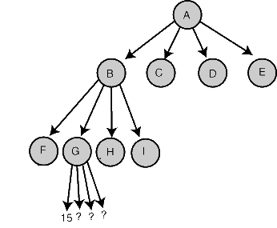

How do you derive the time complexity of alpha-beta pruning?
I understand the basics of minimax and alpha-beta pruning. In all the literature, they talk about the time complexity for the best case is O(b^(d/2)) where b = branching factor and d = depth of the tree, and the base case is when all the preferred nodes are expanded first.
In my example of the "best case", I have a binary tree of 4 levels, so out of the 16 terminal nodes, I need to expand at most 7 nodes. How does this relate to O(b^(d/2))?
I don't understand how they come to O(b^(d/2)).
Answer
O(b^(d/2)) correspond to the best case time complexity of alpha-beta pruning. Explanation:
With an (average or constant) branching factor of b, and a search depth of d plies, the maximum number of leaf node positions evaluated (when the move ordering is pessimal) is O(b b...b) = O(b^d) – the same as a simple minimax search. If the move ordering for the search is optimal (meaning the best moves are always searched first), the number of leaf node positions evaluated is about O(b1b1...b) for odd depth and O(b1b1...*1) for even depth, or O(b^(d/2)). In the latter case, where the ply of a search is even, the effective branching factor is reduced to its square root, or, equivalently, the search can go twice as deep with the same amount of computation.
The explanation of b1b1... is that all the first player's moves must be studied to find the best one, but for each, only the best second player's move is needed to refute all but the first (and best) first player move – alpha–beta ensures no other second player moves need be considered.
Put simply, you "skip" every two level:

O describes the limiting behavior of a function when the argument tends towards a particular value or infinity, so in your case comparing precisely O(b^(d/2)) with small values of b and d doesn't really make sense.